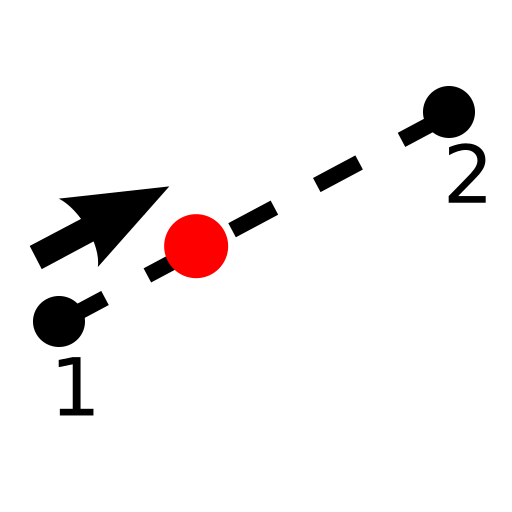
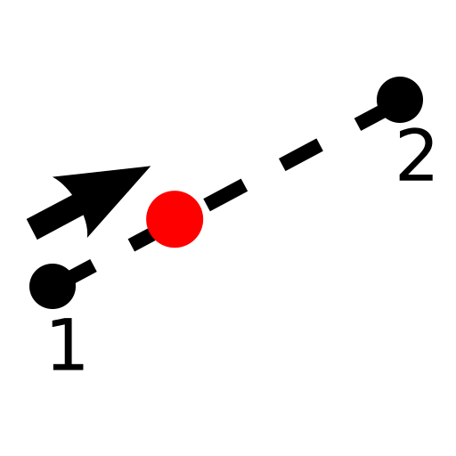
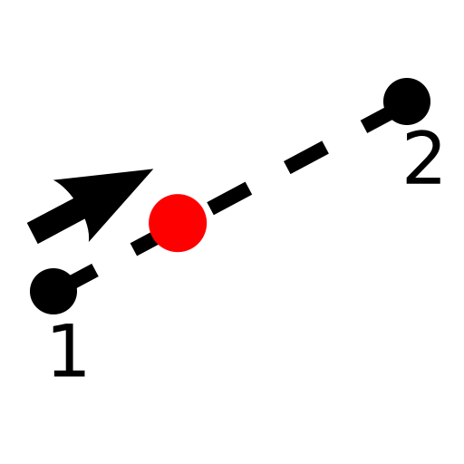

Menü: Fang - Abstand manuell
Tastenkürzel: S, H
Kommandos: snapdistancemanual | sh

Beschreibung:
Dieses Werkzeug ermöglicht es, eine Position zu fangen, die auf der
imaginären Linie zwischen zwei Punkten liegt, mit einem gegebenen Abstand vom
ersten Punkt.
Der eingegebene Abstand wird durch das Werkzeug nicht begrenzt. Wird ein
Abstand eingegeben, der grösser als der Abstand zwischen den zwei Punkten oder
negativ ist, so wird eine Position gefangen, die auf der Verlängerung der Linie
zwischen den zwei Punkten liegt.
Brüche können als Dezimalzahlen (0.5, 0.7) oder direkt als Brüche (1/7,
3/11) eingegeben werden.
Vorgehensweise: